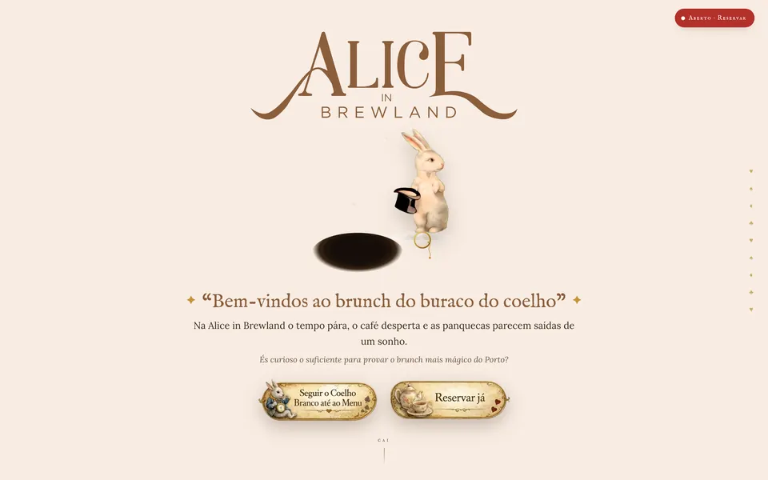
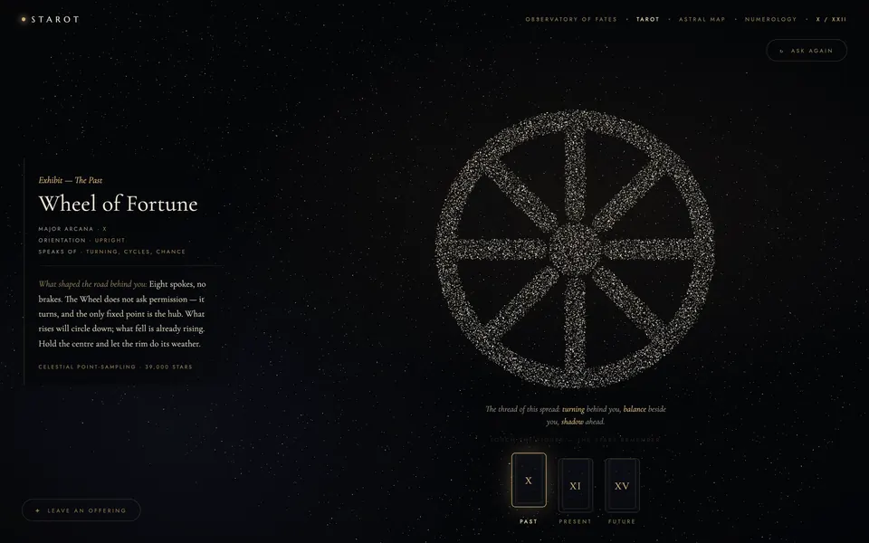
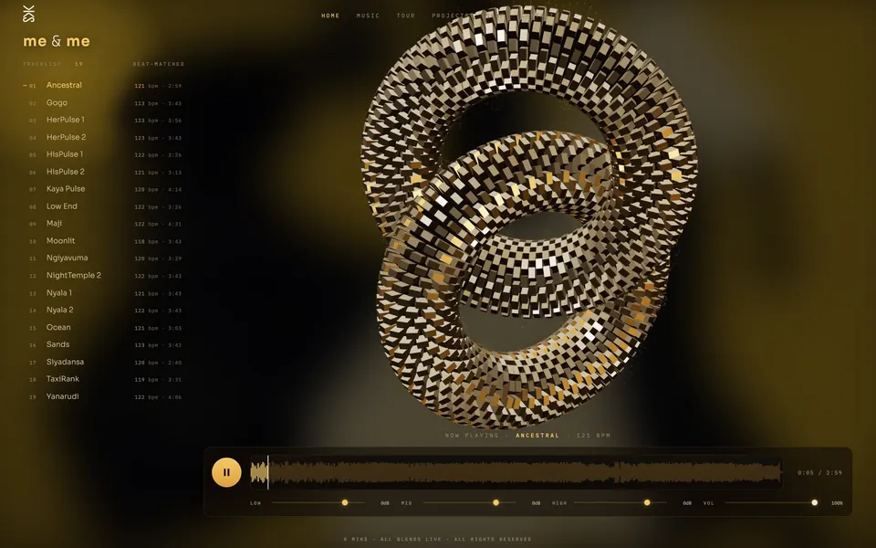
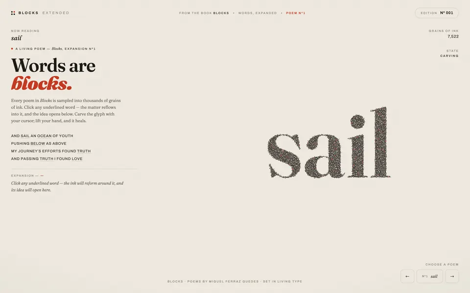

Inovação digital com impacto
Ambiental, social e humano — tecnologia responsável, feita no Porto.







A DIGISOL é uma startup dedicada ao desenvolvimento de produtos e serviços digitais que combinam inteligência artificial generativa, sustentabilidade ambiental e impacto social.
O nosso objetivo é criar ferramentas e plataformas adaptáveis que facilitem a gestão, a comunicação e a tomada de decisões.
Acreditamos no poder transformador da tecnologia quando aplicada de forma responsável e inclusiva, procurando sempre soluções que gerem valor para os nossos clientes e para a sociedade.
Miguel Ferraz Guedes
Fundador · Web developer & designer — Porto / Estocolmo
Designer, programador e artista. Duas décadas de design gráfico, fotografia e vídeo entre Estocolmo e o Porto — e, desde 2024, os sites, apps e plataformas da DIGISOL.
Três eixos, uma direção.
Inovação digital
Desenvolver aplicações inteligentes que automatizam processos, geram conteúdos personalizados e oferecem interfaces adaptativas.
Sustentabilidade
Promover práticas ecológicas e incentivar ações que reduzam a pegada de carbono e preservem os recursos naturais.
Inclusão digital
Tornar a tecnologia acessível a públicos diversos, contribuindo para a inclusão digital e a transferência intergeracional de conhecimento.
As ferramentas que dominamos.
IA & Machine Learning
- LLMs e agentes
- TensorFlow · PyTorch
- Real-time APIs
- Síntese multimodal
- Geração de imagem e vídeo
Web & 3D
- React · TypeScript · Vite
- Node.js · Python · Django
- three.js · WebGL
- GSAP · Lenis
- Web Audio API
Aplicações móveis
- React Native
- Flutter
- Swift
- Kotlin
- PWA